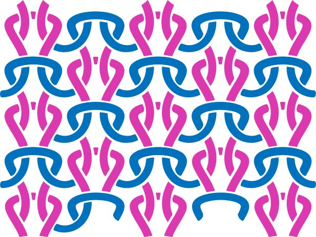
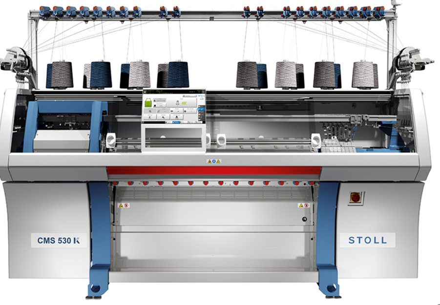
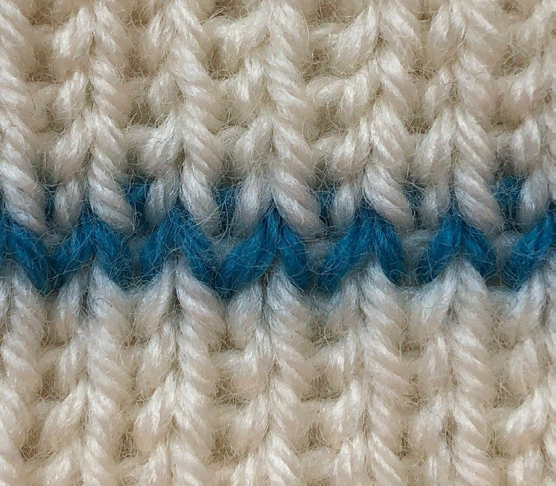
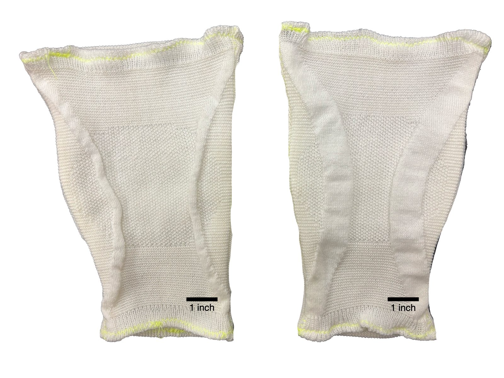
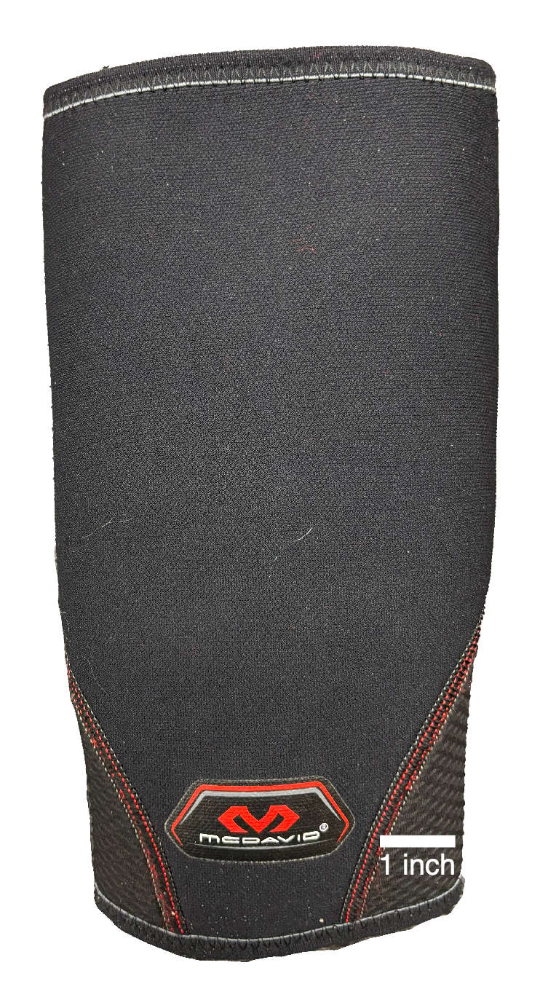
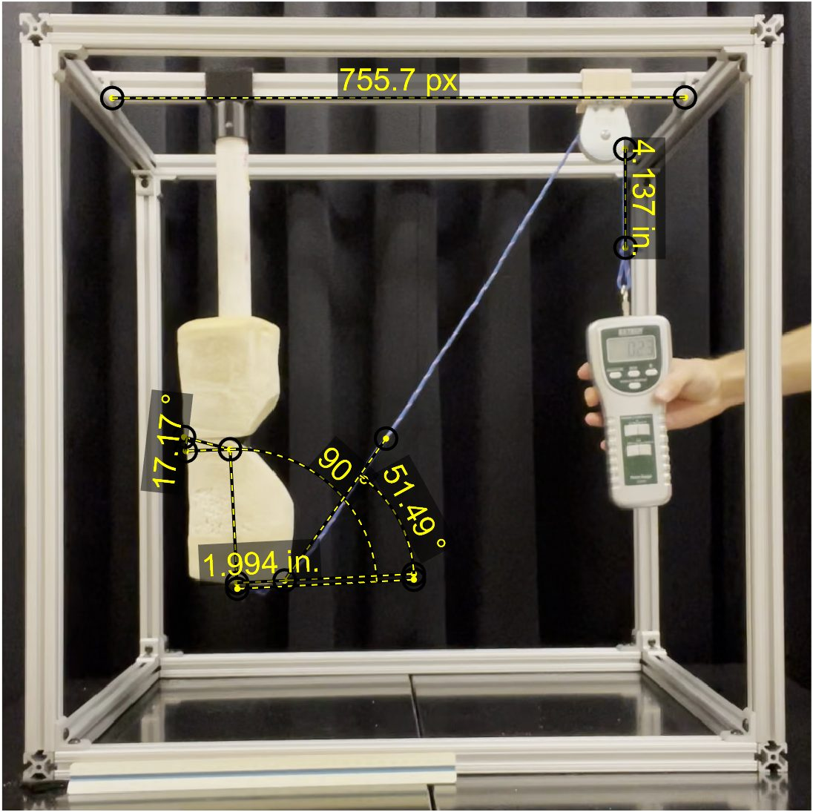
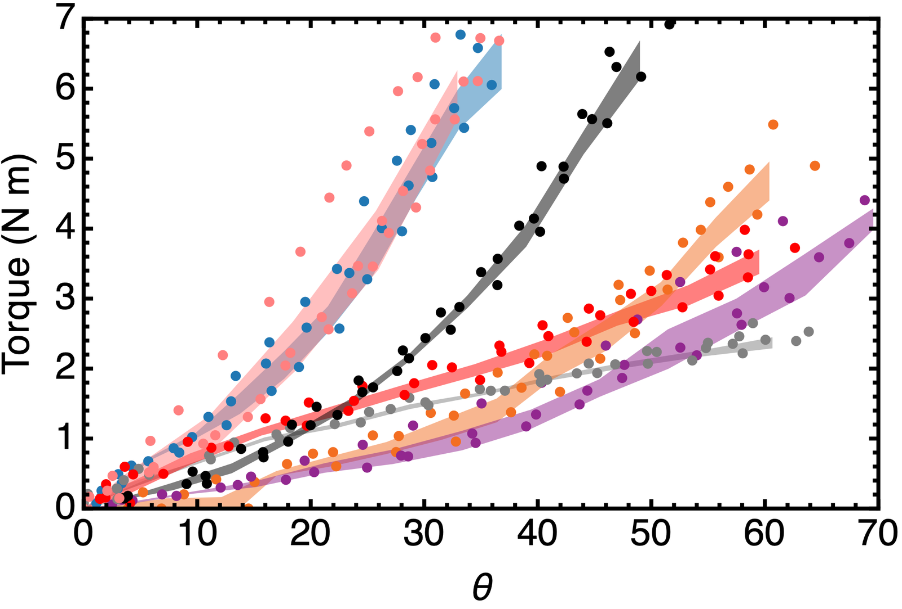
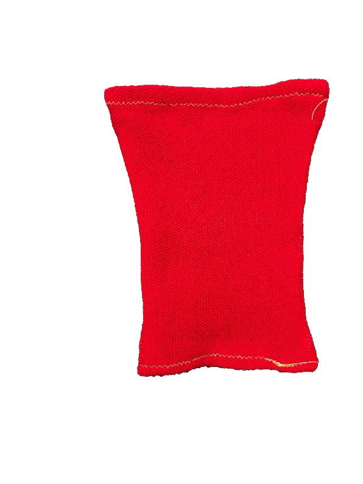
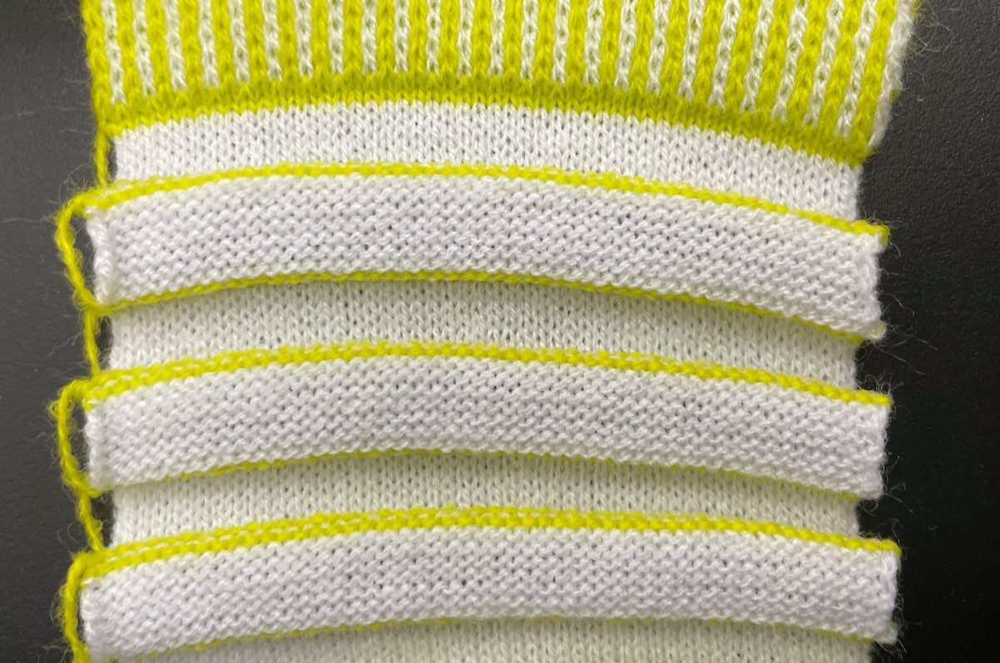

Knitted fabric is a programmable material: from a single yarn, stitch patterning alone produces wildly different mechanical behavior. We characterized knitted "ExoSkins" against commercial knee braces to chart a path toward orthoses knit to a person's specific biomechanics.

Commercial braces come in small, medium, and large. Bodies don't. Knitting machines, though, can vary stitch pattern continuously across a garment — meaning a knee sleeve could in principle be programmed, stitch by stitch, to deliver a prescribed torque-angle response for a specific person's joint. Before you can optimize that, you need to know how elementary stitch patterns actually behave on a joint.
This work — done across the Physiology of Wearable Robotics Lab (Sawicki) and the Geometry of Materials Lab (Matsumoto) at Georgia Tech — produced the first characterization of knitted ExoSkins for bio-augmentation and grew into a co-first-author paper, arXiv:2509.22971.
I designed and built a torque-angle test rig around a foam cast of a human leg, hinged at the knee. Three single-stitch ExoSkins (stockinette, garter, seed), two intuitively-designed multistitch ExoSkins, and three commercial braces (elastic, neoprene, rigid) were tested across the rig:
ExoSkins stiffen progressively with knee angle while commercial braces behave almost linearly — the stitch geometry itself shapes the response curve. Even the stiffest garments contribute only ~2–5% of total walking knee stiffness, which reframes the design goal: the value of knits isn't brute stiffness, it's programmability — user-specific tuning of where and how resistance builds through the range of motion.








The roadmap pairs this experimental foundation with numerical modeling and optimization-based design: measure a user's joint impedance, solve for the stitch map that complements it, and knit the orthosis directly. Alongside the rig work, I performed human biomechanics characterization — motion capture, EMG, and torque-angle testing — feeding the framework for optimization-based wearable design. Applications run from personalized medicine to athletics.